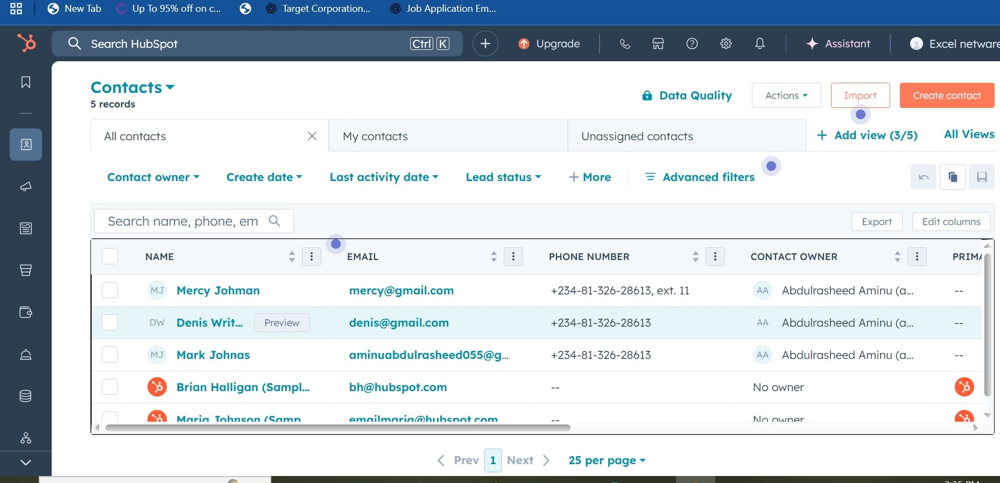
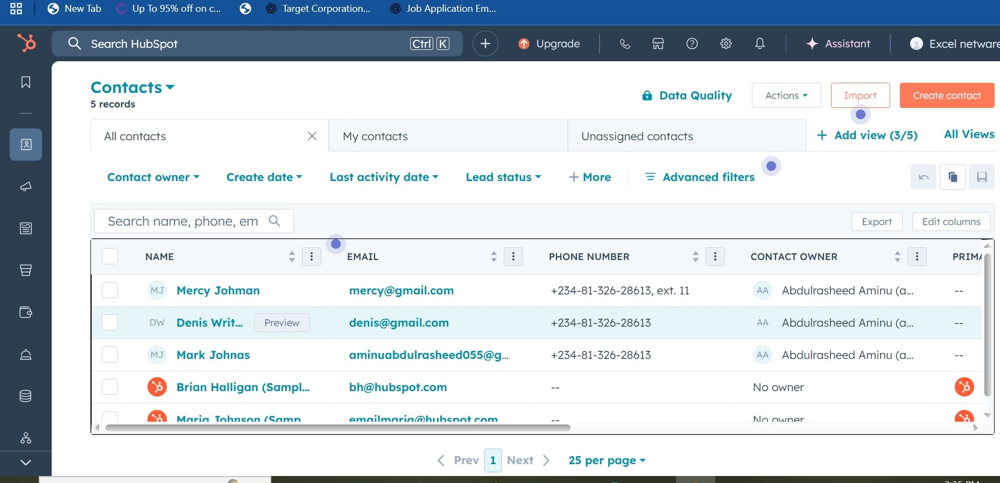
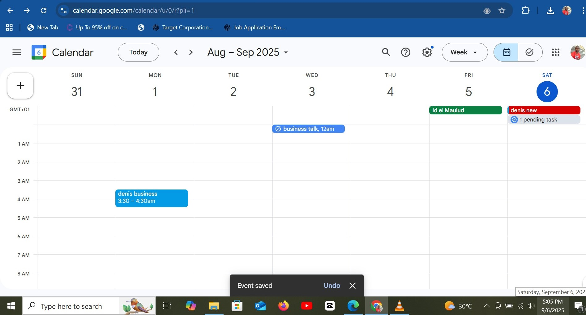
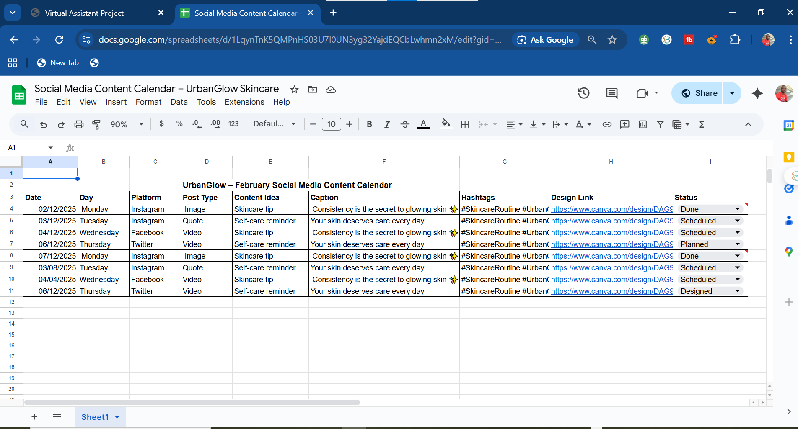
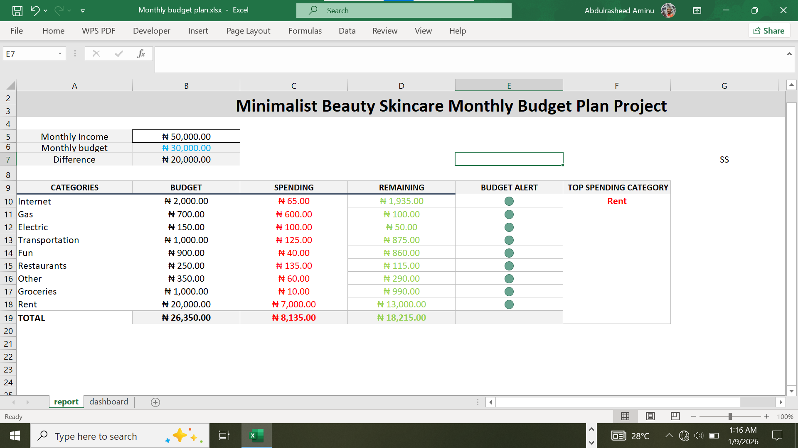
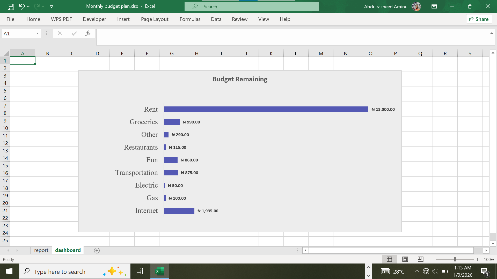
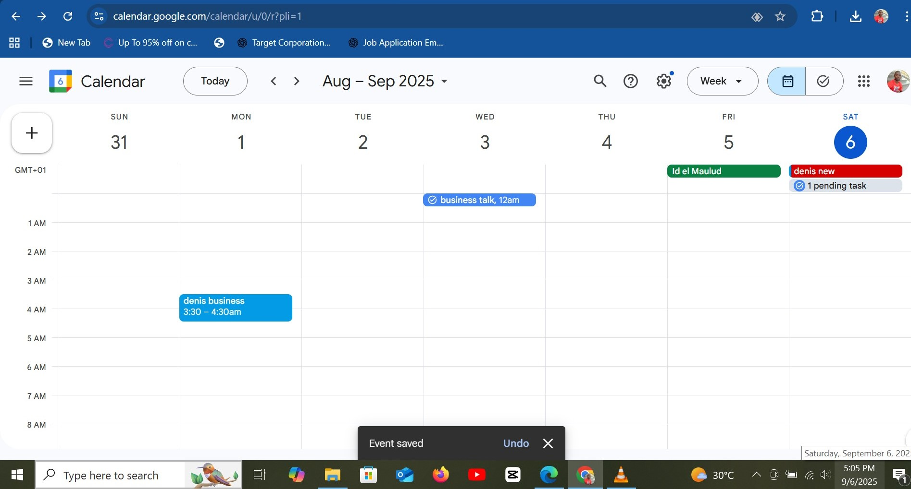
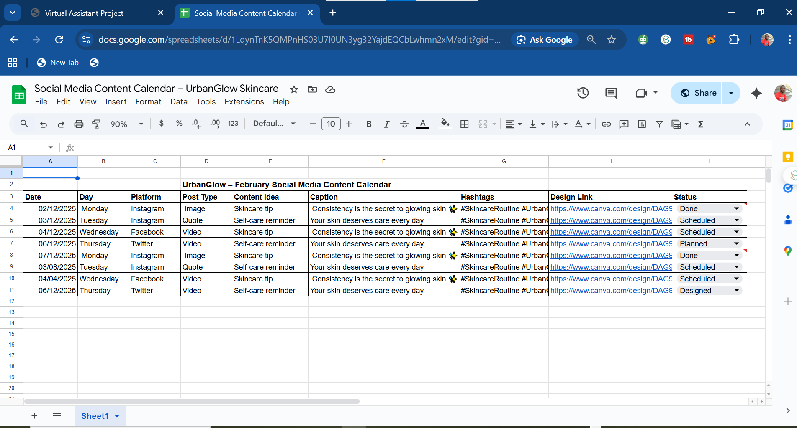
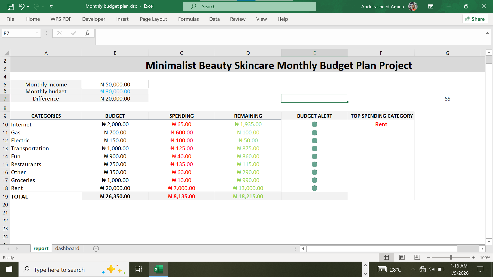
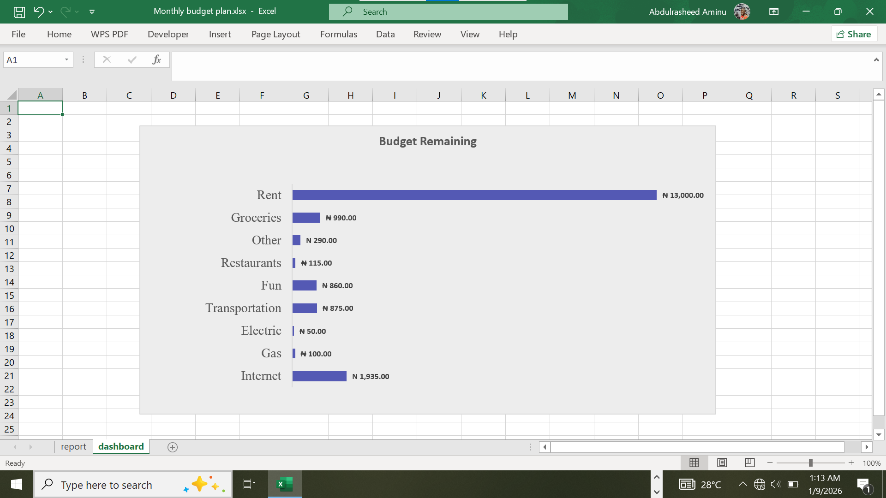

 








Client Operations Managed
- Managed Google Sheets for client tracking, task management, and reporting.
- Created and edited Google Slides presentations for meetings and updates.
- Handled professional email communication using Gmail.
- Scheduled meetings, deadlines, and reminders using Google Calendar.
- Created and managed Google Meet links for virtual client meetings.
- Organized and maintained client documents using Google Drive.
- Worked fully remotely using stable internet and hotspot connectivity.
Tools & Platforms Managed
Google Workspace: Google Sheets, Google Slides, Gmail, Google Calendar,
Google Meet, Google Drive
Productivity: Microsoft Excel (Dashboards & Automation)
Client Support: CRM-style tracking, scheduling, follow-ups
Remote Work: Internet & hotspot-enabled operations
Impact
This system improved client coordination and response efficiency, resulting in a 35% increase in meeting adherence, reduced response delays, and better overall client satisfaction.
← Back to Portfolio